Rubiks Cube Tutorial
Hello, my name is Rishabh Banerjee. I am here to help you solve your first Rubiks Cube.
Video Reference
Notations
You have to first understand the notations of the rubiks cube.
Face Turns
The basic moves are Up, Down, Right, Left, Front, Back.
Each move means to turn that side clockwise.
They can be also be written as U, D, R, L, F, B


An apostrophe (pronounced as prime) means to turn the face in the opposite direction (counterclockwise).
They are written as Up prime or U', Down prime or D', Right prime or R', Left prime or L', Front prime or F', Back prime or B'


The number 2 means to turn that face twice.
They are written as Up 2 or U2, Down 2 or D2, Right 2 or R2, Left 2 or L2, Front 2 or F2, Back 2 or B2


Wide Moves
Wide moves turn 2 layers at once.
They can be written in 2 ways:
Lower case: up, down, right, left, front, back
Ending in wide: Up wide, Down wide, Right wide, Left wide, Front wide, Back wide
They can be also be written as u or Uw, d or Dw, r or Rw, l or Lw, f or Fw, b or Bw
Note: Sometimes the lower case L (l) looks like an upper case i (I), but keep in mind that the upper case i (I) is not a possible move.


There is also Up wide prime and Up wide 2, etc.
Cube Rotations
Cube rotations are written as x, y, z.
x follows the R direction, y follows the U direction, z follows the F direction.


There is also x' and x2, etc.
Slice Moves
Slice moves are written as M, E, S. Slice moves only turn the middle layer.
M follows the L direction, E follows the D direction, S follows the F direction.


There is also M' and M2, etc.
Pieces of a Rubik's Cube
There are three types of pieces on a rubiks cube.
Edge pieces
Edge pieces have 2 colors. There are 12 edge pieces on a rubik's cube.
Corner pieces
Corner pieces have 3 colors. There are 8 corner pieces on a rubik's cube.
Center pieces
Center pieces have 1 colors. There are 6 center pieces on a rubik's cube.

Beginner's Tutorial
Step 1. White Cross

 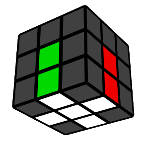
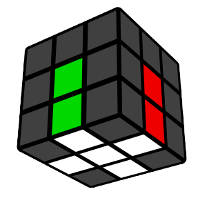
Hold the white center piece on the top and find an edge in the bottom layer that has white on it.
Look at the edge piece's other color and turn the bottom layer so the edge is under the center of the same color.
Turn that face to bring the edge piece to the top.


Another example:


Anytime an edge piece is flipped, fix it by doing the following moves:


Anytime you find a white edge piece that is not in the bottom layer, you can move it into the bottom by doing the following moves:


And then solve it like you would for any white edge in the bottom layer.
Solve all 4 of the white edge pieces to make a cross. Make sure you always look at both colors on each piece so that you end up with the side colors matching as well.
Step 2. First Layer

Hold the white cross on the bottom.
Before solving anything, do this 4-move sequence repeatedly until you have memorized it. It will be very important later on!
Right handed 4-moves:
Right, Up, Right prime and Up prime.


Left handed 4-moves:
Left prime, Up prime, Left and Up.


Now we'll use the 4-moves to solve the first layer.
With the cross on the bottom, find a corner piece in the top layer with white on it. Turn the top layer so the surrounding centers match the colors on the corner.


Hold the cube so the corner piece is on the front/right, and repeat the right handed 4-moves until this corner is solved.


You can also use the left 4-moves if you hold the piece on the front/left to start.
Repeat until all of the first layer corners are solved. If you find a white corner incorrectly in the bottom layer, you can bring it into the top layer by holding it on the front/right and doing the right 4-moves.
Step 3. Second Layer

Find an edge piece in the top layer without yellow as either of its 2 colors.
Turn the top so that it matches a center.
Face the piece and check if the top color matches the right center or left center.


If it matches the right side, do the following moves:
Up prime, The right 4 moves (Right, Up, Right prime and Up prime), Y move (or a wide down prime (d' or Dw')), The left 4 moves (Left prime, Up prime, Left and Up).


If it matches the left side, do the following moves:
Up, The left 4 moves (Left prime, Up prime, Left and Up), Y prime move (or a wide down (d or Dw)), The right 4 moves (Right, Up, Right prime and Up prime).


Repeat this until all of the 2nd layer edges are solved.
If an edge you are looking for is stuck somewhere in the 2nd layer, move any edge into its spot using one of the 2 algorithms above. This will cause the edge to come out into the top layer.
Step 4. Yellow Cross

Hold the cube to match one of the following (ignore the corner pieces):
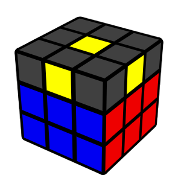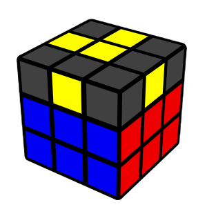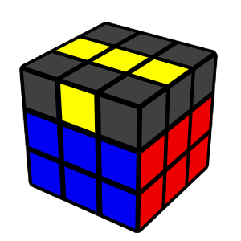
Then do the following moves:
Front, The right 4 moves (Right, Up, Right prime and Up prime), Front prime.


If the cross is not solved yet, hold the cube to match the new case and repeat.
Note: If you have 1 or 3 edge pieces facing up, your cube is unsolvable, and needs to be taken apart and reassembled.
Step 5. Match Yellow Cross Colors

Turn the up layer until 2 cross pieces match the side color (if all 4 match, you have finished this step.)


Hold the 2 matching edges at the back/right. If they are across from each other, hold them in any way.


Then do the following moves:
The right 4 moves (Right, Up, Right prime and Up prime), Up, Right, Up 2 and Right prime.


Turn the top to match all 4 colors. If you can only match 2 colors, then repeat this step
Step 6. Match Yellow Corners

A corner is in the correct position if all 3 colors on the piece match the surrounding colors.
Examples of corner pieces in the correct position:


If 1 corner is correct, hold it in the front/right (if 0 are correct, hold any corner in the front/right).
Then do the following moves:
Up, Right, Up prime, Left prime, Up, Right prime, Up prime and Left.


Check if all 4 corners are in the correct position.
Note: If you have only 2 corners in the correct position, your cube is unsolvable, and needs to be taken apart and reassembled.
Step 7. Solve the Cube!

On this step it is very easy to make a mistake but if you do it correctly then your cube will be solved.
Turn the cube over so that the unsolved corners are all in the bottom layer.
You may have 2, 3, or 4 unsolved corner pieces.


The 4-move sequence until the front/right corner is solved (has yellow on the bottom).
Then turn the bottom layer (not the whole cube) to bring an unsolved corner to the front/right. Repeat until the whole cube is solved.


Note: Turning the whole cube to get the next corner to the bottom/right. Make sure you turn only the bottom layer.
Not finishing the 4-moves because the corner is solved after 3 moves. Make sure you always finish the 4-moves.
If you only have 1 corner unsolved while the rest of the cube is solved then your cube is unsolvable, and needs to be taken apart and reassembled.
CFOP Tutorial
Meaning of CFOP
CFOP's full form is Cross, F2L, OLL and PLL. You should know how to do the cross from the beginner's tutorial above. F2L means to do the first 2 layers at once meaning you insert an edge and a corner piece at the same time. OLL means orientation of the last layer meaning to orient the yellow side. PLL means to permutation of the last layer meaning you permute the remaining pieces.
Cross
Refer the cross from the beginner's tutorial.
F2L
 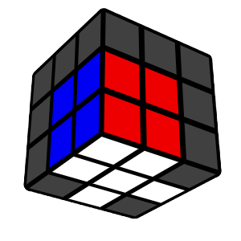
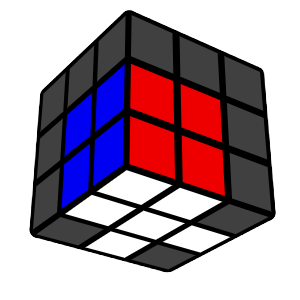
Find an edge piece in the top layer without yellow as either of its 2 colors and find a corner piece that has the corresponding colors of the edge piece in the top layer with white on it.
Turn the top so that the edge piece matches the center.If the corner piece is on the opposite side of the edge piece, then see if the top color of the corner piece is the same as the side color of the edge piece.
Then match the corner to the centers.
If the corner matches the centers on the right side then do the right 4 moves.
If the corner matches the centers on the left side then do the left 4 moves.
If the top color of the corner piece is the same as the top color of the edge piece. Match the edge with the center but not with the side color but the top color and then do this:
Right, Up 2, Right prime, Up 2, Right, Up prime and Right prime.
If the top color of the corner piece is white. Then match the corner piece to the centers and do this:
Right, Up prime, Right prime, Up, Right, Up prime and Right prime.
Then insert it with Right, Up, Right prime or if it is on the left then do Left prime, Up ad Left.
If your corner is in the bottom layer then do the 4 moves to bring it in the top layer.
OLL
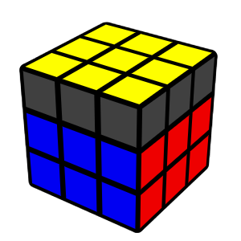
In OLL you can first learn the beginner OLL and then you can learn the full OLL.
Beginner OLL
Dot Shape

Front, Right, Up, Right prime, Up prime, Front prime, front(Front wide), Right, Up, Right prime, Up prime and front prime(Front wide prime)
Line Shape

Front, Right, Up, Right prime, Up prime, Front prime
L Shape

front(Front wide), Right, Up, Right prime, Up prime and front prime(Front wide prime)
Sune
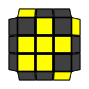
Right, Up, Right prime, Up, Right, Up 2 and Right prime
Antisune
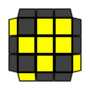
Right, Up 2, Right prime, Up prime, Right, Up prime and Right prime
H
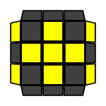
Right, Up, Right prime, Up, Right, Up prime, Right prime, Up, Right, Up 2 and Right prime
L

Front, Right prime, Front prime, right(Right wide), Up, Right, Up prime and right prime(Right wide prime)
Pi
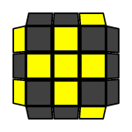
Right, Up 2, Right 2, Up prime, Right 2, Up prime, Right 2, Up 2 and Right
T
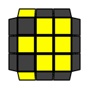
right(Right wide), Up, Right prime, Up prime, right prime(Right wide prime), Front, Right and Front prime
U
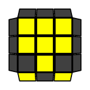
Right 2, Down, Right prime, Up 2, Right, Down prime, Right prime, Up 2 and Right prime
OLL
All Edges Oriented
No. 21
Right, Up, Right prime, Up, Right, Up prime, Right prime, Up, Right, Up 2 and Right prime
No. 22
Right, Up 2, Right 2, Up prime, Right 2, Up prime, Right 2, Up 2 and Right
No. 23
Right 2, Down, Right prime, Up 2, Right, Down prime, Right prime, Up 2 and Right prime
No. 24
right(Right wide), Up, Right prime, Up prime, right prime(Right wide prime), Front, Right and Front prime
No. 25
Front, Right prime, Front prime, right(Right wide), Up, Right, Up prime and right prime(Right wide prime)
No. 26
Right, Up 2, Right prime, Up prime, Right, Up prime and Right prime
No. 27
Right, Up, Right prime, Up, Right, Up 2 and Right prime
All Corners Oriented
No. 28
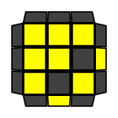
right(Right wide), Up, Right prime, Up prime, right prime(Right wide prime), Right, Up, Right, Up prime, Right prime
No. 57

Right, Up, Right prime, Up prime, M prime, Up, Right, Up prime, right prime(Right wide prime)
T Shapes
No. 33

Right, Up, Right prime, Up prime, Right prime, Front, Right, Front prime
No. 45

Front, Right, Up, Right prime, Up prime, Front prime
W shapes
No. 36
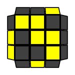
Left prime, Up prime, Left, Up prime, Left prime, Up, Left, Up, Left, Front prime, Left prime, Front
No. 38
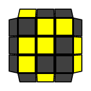
Right, Up, Right prime, Up, Right, Up prime, Right prime, Up prime, Right prime, Front, Right, Front prime
Square Shapes
No. 5
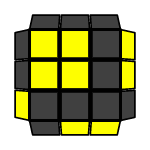
left prime(Left wide prime), Up 2, Left, Up, Left prime, Up, left(Left wide)
No. 6

right(Right wide), Up 2, Right prime, Up prime, Right, Up prime, right prime(Right wide prime)
P Shapes
No. 31
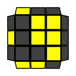
Right prime, Up prime, Front, Up, Right, Up prime, Right prime, Front prime, Right
No. 32

Left, Up, Front prime, Up prime, Left prime, Up, Left, Front, Left prime
No. 43

Front prime, Up prime, Left prime, Up, Left, Front
No. 44

Front, Up, Right, Up prime, Right prime, Front prime
Fish Shapes
No. 9
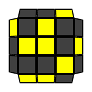
Right, Up, Right prime, Up prime, Right prime, Front, Right 2, Up, Right prime, Up prime, Front prime
No. 10

Right, Up, Right prime, Up, Right prime, Front, Right, Front prime, Right, Up 2, Right prime
No. 35

Right, Up 2, Right 2, Front, Right, Front prime, Right, Up 2, Right prime
No. 37

Front, Right prime, Front prime, Right, Up, Right, Up prime, Right prime
C Shapes
No. 34
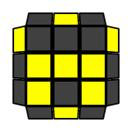
Right, Up, Right 2, Up prime, Right prime, Front, Right, Up, Right, Up prime, Front prime
No. 46

Right prime, Up prime, Right prime, Front, Right, Front prime, Up, Right
Small Lightning Bolts
No. 7

right(Right wide), Up, Right prime, Up, Right, Up 2, right prime(Right wide prime)
No. 8

left prime(Left wide prime), Up prime, Left, Up prime, Left prime, Up 2, left(Left wide)
No. 11

right(Right wide), Up, Right prime, Up, Right prime, Front, Right, Front prime, Right, Up 2, right prime(Right wide prime)
No. 12

M prime, Right prime, Up prime, Right, Up prime, Right prime, Up 2, Right, Up prime, Right, right prime(Right wide prime)
Big Lightning Bolts
No. 39

Left, Front prime, Left prime, Up prime, Left, Up, Front, Up prime, Left prime
No. 40

Right prime, Front, Right, Up, Right prime, Up prime, Front prime, Up, Right
Small L Shapes
No. 47

Right prime, Up prime, Right prime, Front, Right, Front prime, Right prime, Front, Right, Front prime, Up, Right
No. 48

Front, Right, Up, Right prime, Up prime, Right, Up, Right prime, Up prime, Front prime
No. 49

right(Right wide), Up prime, right 2(Right wide 2), Up, right 2(Right wide 2), Up, right 2(Right wide 2), Up prime, right(Right wide)
No. 50

right prime(Right wide prime), Up, right 2(Right wide 2), Up prime, right 2(Right wide 2), Up prime, right 2(Right wide 2), Up, right prime(Right wide prime)
No. 53

left prime(Left wide prime), Up 2, Left, Up, Left prime, Up prime, Left, Up, Left prime, Up, left(Left wide)
No. 54

right(Right wide), Up 2, Right prime, Up prime, Right, Up, Right prime, Up prime, Right, Up prime, right prime(Right wide prime)
Knight Move Shapes
No. 13
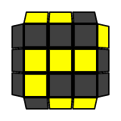
Front, Up, Right, Up prime, Right 2, Front prime, Right, Up, Right, Up prime, Right prime
No. 14

Right prime, Front, Right, Up, Right prime, Front prime, Right, Front, Up prime, Front prime
No. 15

left prime(Left wide prime), Up prime, left(Left wide), Left prime, Up prime, Left, Up, left prime(Left wide prime), Up, left(Left wide)
No. 16

right(Right wide), Up, right prime(Right wide prime), Right, Up, Right prime, Up prime, right(Right wide), Up prime, right prime(Right wide prime)
I Shapes
No. 51
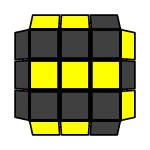
Front, Up, Right, Up prime, Right prime, Up, Right, Up prime, Right prime, Front prime
No. 52

Right, Up, Right prime, Up, Right, Up prime, Back, Up prime, Back prime, Right prime
No. 55

Right prime, Front, Right, Up, Right, Up prime, Right 2, Front prime, Right 2, Up prime, Right prime, Up, Right, Up, Right prime
No. 56

right prime(Right wide prime), Up prime, right(Right wide), Up prime, Right prime, Up, Right, Up prime, Right prime, Up, Right, right prime(Right wide prime), Up, right(Right wide)
Awkward Shapes
No. 29

Right, Up, Right prime, Up prime, Right, Up prime, Right prime, Front prime, Up prime, Front, Right, Up, Right prime
No. 30

Front, Right prime, Front, Right 2, Up prime, Right prime, Up prime, Right, Up, Right prime, Front 2
No. 41

Right, Up, Right prime, Up, Right, Up 2, Right prime, Front, Right, Up, Right prime, Up prime, Front prime
No. 42

Right prime, Up prime, Right, Up prime, Right prime, Up 2, Right, Front, Right, Up, Right prime, Up prime, Front prime
No Edges Oriented
No. 1

Right, Up 2, Right 2, Front, Right, Front prime, Up 2, Right prime, Front, Right, Front prime
No. 2

right(Right wide), Up, right prime(Right wide prime), Up 2, right(Right wide), Up 2, Right prime, Up 2, Right, Up prime, right prime(Right wide prime)
No. 3

right prime(Right wide prime), Right 2, Up, Right prime, Up, right(Right wide), Up 2, right prime(Right wide prime), Up, M prime
No. 4

M, Up prime, right(Right wide), Up 2, right prime(Right wide prime), Up prime, Right, Up prime, Right prime, M prime
No. 17

Front, Right prime, Front prime, Right 2, right prime(Right wide prime), Up, Right, Up prime, Right prime, Up prime, M prime
No. 18

right(Right wide), Up, Right prime, Up, Right, Up 2, right 2(Right wide 2), Up prime, Right, Up prime, Right prime, Up 2, right(Right wide)
No. 19

right prime(Right wide prime), Right, Up, Right, Up, Right prime, Up prime, M prime, Right prime, Front, Right, Front prime
No. 20

right(Right wide), Up, Right prime, Up prime, M 2, Up, Right, Up prime, Right prime, Up prime, M prime
PLL
In PLL you can first learn the beginner PLL and then you can learn the full PLL.
Beginner PLL
Diagonal
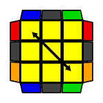
Front, Right Up prime, Right prime, Up prime, Right, Up, Right prime, Front prime, Right, Up, Right prime, Up prime, Right prime, Front, Right, Front prime
Headlights
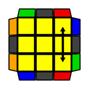
Right, Up, Right prime, Up prime, Right prime, Front, Right 2, Up prime, Right prime, Up prime, Right, Up, Right prime, Front prime
H perm

M 2, Up, M 2, Up 2, M 2, Up, M 2
Ua perm

Right, Up prime, Right, Up, Right, Up, Right, Up prime, Right prime, Up prime, Right 2
Ub perm

Right 2, Up, Right, Up, Right prime, Up prime, Right prime, Up prime, Right prime, Up, Right prime
Z perm

M prime, Up, M 2, Up, M 2, Up, M prime, Up 2, M 2
PLL
Aa perm

x, Right prime, Up, Right prime, Down 2, Right, Up prime, Right prime, Down 2, Right 2
Ab perm

x, Right 2, Down 2, Right, Up, Right prime, Down 2, Right, Up prime, Right
E perm

x', Right, Up prime, Right prime, Down, Right, Up, Right prime, Down prime, Right, Up, Right prime, Down, Right, Up prime, Right prime, Down prime
F perm

Right prime, Up prime, Front prime, Right, Up, Right prime, Up prime, Right prime, Front, Right 2, Up prime, Right prime, Up prime, Right, Up, Right prime, Up, Right
Ga perm

Right 2, Up, Right prime, Up, Right prime, Up prime, Right, Up prime, Right 2, Up prime, Down, Right prime, Up, Right, Down prime
Gb perm

Right prime, Up prime, Right, Up, Down prime, Right 2, Up, Right prime, Up, Right, Up prime, Right, Up prime, Right 2, Down
Gc perm

Right 2, Up prime, Right, Up prime, Right, Up, Right prime, Up, Right 2, Up, Down prime, Right, Up prime, Right prime, Down
Gd perm

Right, Up, Right prime, Up prime, Down, Right 2, Up prime, Right, Up prime, Right prime, Up, Right prime, Up, Right 2, Down prime
H perm
M 2, Up, M 2, Up 2, M 2, Up, M 2
Ja perm

Left prime, Up prime, Left, Front, Left prime, Up prime, Left, Up, Left, Front prime, Left 2, Up, Left
Jb perm

Right, Up, Right prime, Front prime, Right, Up, Right prime, Up prime, Right prime, Front, Right 2, Up prime, Right prime
Na perm

Right, Up, Right prime, Up, Right, Up, Right prime, Front prime, Right, Up, Right prime, Up prime, Right prime, Front, Right 2, Up prime, Right prime, Up 2, Right, Up prime, Right prime
Nb perm

Right prime, Up, Right, Up prime, Right prime, Front prime, Up prime, Front, Right, Up, Right prime, Front, Right prime, Front prime, Right, Up prime, Right
Ra perm

Right, Up prime, Right prime, Up prime, Right, Up, Right, Down, Right prime, Up prime, Right, Down prime, Right prime, Up 2, Right prime
Rb perm

Right 2, Front, Right, Up, Right, Up prime, Right prime, Front prime, Right, Up 2, Right prime, Up 2, Right
T perm

Right, Up, Right prime, Up prime, Right prime, Front, Right 2, Up prime, Right prime, Up prime, Right, Up, Right prime, Front prime
Ua perm
Right, Up prime, Right, Up, Right, Up, Right, Up prime, Right prime, Up prime, Right 2
Ub perm
Right 2, Up, Right, Up, Right prime, Up prime, Right prime, Up prime, Right prime, Up, Right prime
V perm

Right prime, Up, Right prime, Up prime, y, Right prime, Front prime, Right 2, Up prime, Right prime, Up, Right prime, Front, Right, Front
Y perm

Front, Right, Up prime, Right prime, Up prime, Right, Up, Right prime, Front prime, Right, Up, Right prime, Up prime, Right prime, Front, Right, Front prime
Z perm
M prime, Up, M 2, Up, M 2, Up, M prime, Up 2, M 2
About Me

Hello, my name is Rishabh Banerjee.
I am 12 years old.
I study in Billabong High International School, Thane.
I am a student of seventh grade.
My hobbies are coding, cubing, reading books and playing Tabla (Indian Acoustic Drum).
I used to do Karate and I am black belt in Karate.
I like cubing because at first it seemed a difficult capability but as I started practising it became very easy.
My best time to solve a 3x3 Cube is 22 seconds.
I wanted to learn this hobby because I received my first cube as a gift from my Grandfather seven years ago.
I faced the challenge solving this cube as I scrambled it after receiving it and so it stayed in my cupboard for 7 years.
One day my Grandmother took it out so I thought I would solve it but it was very difficult.
But one morning I turned the cube randomly and made the white cross and after that I watched a tutorial and solved it.
Now I can solve cubes upto the order of a 8x8.
Everyone should try to learn how to solve a cube because it is an excellent mental exercise. 😃